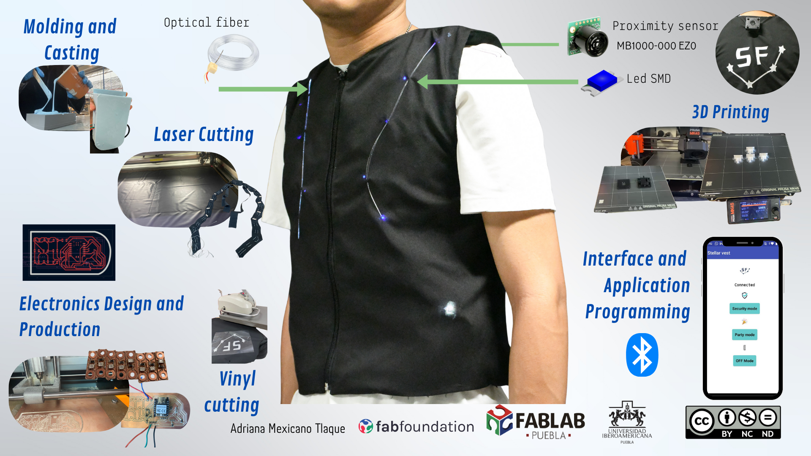
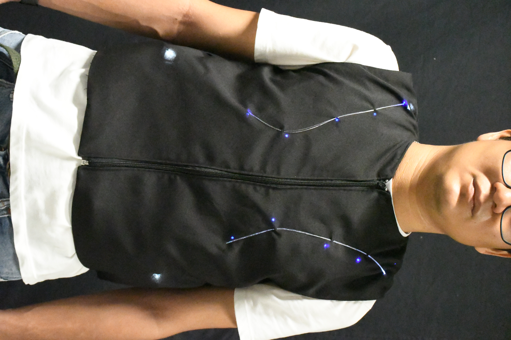
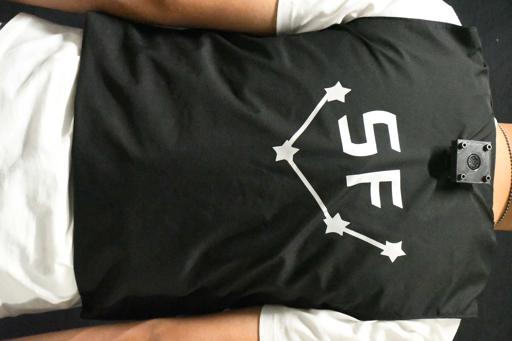

Stellar Vest
Wearable safety vest that lights up when someone approaches.

The Project
Stellar Vest has a proximity sensor on the back and optical fiber lights. When someone gets too close, the lights turn on.
It is designed to improve the visibility and safety of pedestrians, runners and cyclists at night, and it also explores the artistic interaction between light and movement.
It runs on a XIAO ESP32-C6 microcontroller and an LV-MaxSonar-EZ0 ultrasonic sensor. Over Bluetooth, you switch between three modes: safety, party and off.
Process
Design
Sketching, vest patterns and design of the electronic boards in KiCad.
Cutting and digital fabrication
Laser cutting of the fabric, sublimated textile vinyl and 3D printing of the sensor mount.
Electronics
Milling and soldering of the boards, optical fiber modules and a molded silicone case.
Integration
Sewing with conductive thread, with detachable electronics so the garment can be washed.
Testing
Sensor calibration, reinforced stitching and fiber adjustment to reduce bends.
Gallery



